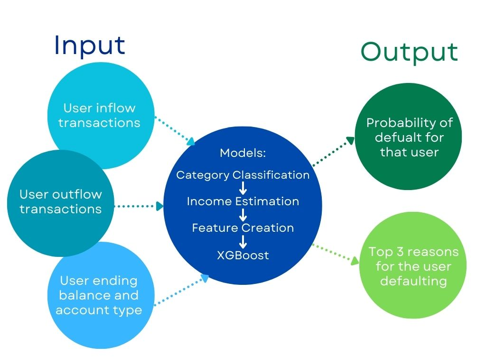
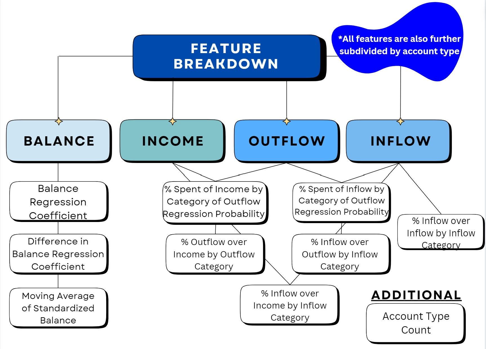
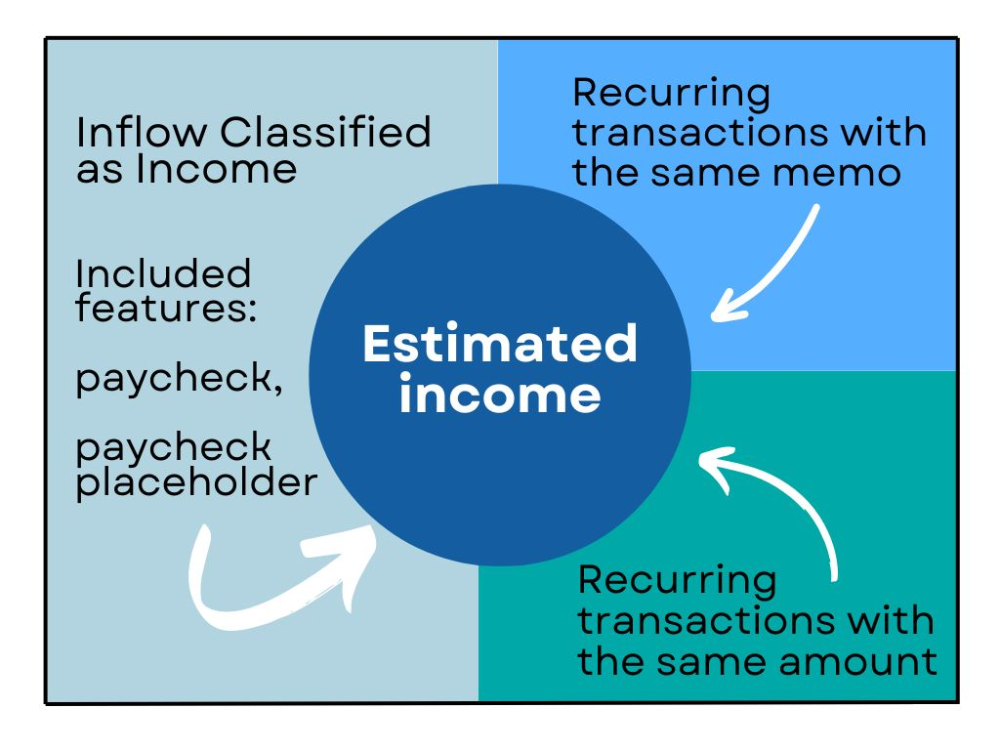
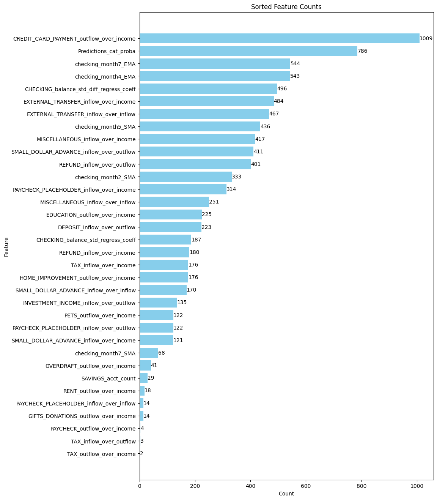

Abstract
In the current dynamic economic landscape, financial institutions are increasingly harnessing the power of machine learning to predict the risk of customer default. The income, balance, and transaction category are three important key factors correlated to the credit risk for each customer. In this paper, we aim to develop a model that combines all features related to these three aspects to predict whether the customer will default their money to banking.
Introduction
Predicting the credit risk score for customers is crucial for financial institutions to maintain a safe and organized environment. When it comes to credit risk analysis in particular, financial institutions tend to have access to multitudes of important user data, but using it to accurately and efficiently predict risk can become difficult based on the data structure. In this project, we will focus on combining customers' income, balance, and transaction category information to create features that help the model predict the default probabilities for each customer. For the income features, we relate to income estimation work that we did in Quarter 1 to estimate the outflow category spending of income percentage. For the balance feature, we calculate the cumulative balance sum and use the balance regression coefficient as a threshold. For the transaction features, we calculate the customer's percentage spent by both the inflow and outflow categories. Additionally, we also define a feature that correlates to the account type since different account type has different inflow and outflow amounts per customer.
Methods
Our prediction model heavily depended on the features derived from the datasets. This section outlines the methodologies employed to generate these features, crucial for the efficacy of our predictive modeling framework.
Income Estimation
One component we knew we wanted to include in order to assess risk of default was income. We believed people with steady income were more less likely to default, but since this measure is not monitored, we needed to estimate it. Our estimate depended on:
Feature Creation
Nearly all our features can be categorized into four main types: balance, income, outflow, and inflow. Some features were derived from ratios between these categories, such as inflow-to-inflow category. This type of analysis aims to help explain trends in credit and debit proportions and their origins. Ratios not directly used were incorporated into a logistic regression model, where instead we utilized default probability as a feature. Another focus area was balance and its trends over time. Regression coefficients were calculated for balance and differences in balance, supplemented by moving averages to capture stable patterns. These features were designed to track changes in users' overall financial activity over extended periods. The final feature that does not fit into the aforementioned categories is account type count.
Feature Selection and Models
In refining our feature set for optimal model performance, we started with 132 features and streamlined them using exclusion criteria to remove bias-related features, such as those involving sensitive healthcare information. We assessed the importance of the remaining features differently for each model: logistic regression and SVM models were evaluated by their coefficients, while XGBoost used its feature importance function. Through cross-validation and iterative analysis, we identified and retained the most impactful features, enhancing the model's predictive capability.
-
Logistic Regression
- The Logistic Regression serves as our baseline for predicting customer default outcomes, chosen for its aptness in binary classification tasks and flexibility across various types of independent variables. Feature selection is performed as described earlier, followed by model training and evaluation on a stratified train-test split to assess performance metrics like accuracy and AUC score.
Support Vector Machine
- We then explore the Support Vector Machine (SVM) model, recognized for its proficiency in high-dimensional spaces, such as text classification. The approach mirrors that of Logistic Regression, focusing on feature importance for model training and performance evaluation.
XGBoost
- We focus on XGBoost, celebrated for its prowess with complex datasets and high accuracy across diverse data types. This makes it an excellent choice for our default prediction task. Our approach with XGBoost mirrors earlier models, starting with feature selection guided by the model's feature importance. We then train and evaluate XGBoost on the selected features, using metrics like accuracy, AUC score, and classification reports for performance assessment.
Results
| Metric | Definition | Formula |
|---|---|---|
| Precision | Measures the percentage of predictions made by the model that are correct. | |
| Recall | Measures the percentage of relevant data points that were correctly identified by the model. | |
| F1 Score | Harmonic mean of precision and recall. | |
| Support | Number of actual occurrences of each class in the dataset. | N/A |
| Accuracy | Measures the number of correctly classified instances over the total number of instances. | |
| Macro average | Average of metrics across all classes, treating each class equally. | N/A |
| Weighted average | Average of metrics across all classes, weighted by support. | N/A |
Model Performance
Logistic Regression
| precision | recall | f1-score | support | |
|---|---|---|---|---|
| 0 | 0.82 | 0.99 | 0.90 | 798 |
| 1 | 0.63 | 0.09 | 0.16 | 185 |
| accuracy | 0.82 | 983 | ||
| macro avg | 0.73 | 0.54 | 0.53 | 983 |
| weighted avg | 0.79 | 0.82 | 0.76 | 983 |
Support Vector Machine
| precision | recall | f1-score | support | |
|---|---|---|---|---|
| 0 | 0.88 | 0.93 | 0.90 | 798 |
| 1 | 0.00 | 0.00 | 0.00 | 185 |
| accuracy | 0.81 | 983 | ||
| macro avg | 0.41 | 0.50 | 0.45 | 983 |
| weighted avg | 0.66 | 0.81 | 0.73 | 983 |
XGBoost
| precision | recall | f1-score | support | |
|---|---|---|---|---|
| 0 | 0.81 | 1.00 | 0.90 | 798 |
| 1 | 0.59 | 0.44 | 0.50 | 185 |
| accuracy | 0.84 | 983 | ||
| macro avg | 0.73 | 0.68 | 0.70 | 983 |
| weighted avg | 0.82 | 0.84 | 0.83 | 983 |
Based on the results of our three models, all the accuracy scores of our models reached 80 percent or higher, indicating the models are performing well across both classes. This means that for a given set of data, our models can correctly identify whether a customer will default or not 80 percent of time. Additionally, based on the AUC score, the xgboost model has the best result. An AUC score, or Area Under the Receiver Operating Characteristic (ROC) Curve, of 0.87 indicates a high level of model performance in distinguishing between the positive class (e.g., customers who will default) and the negative class (e.g., customers who will not default). So there is an 87 percent chance that the model will be able to distinguish between a randomly chosen positive instance and a randomly chosen negative instance. This is considered to be a very good performance, indicating that the model has a high likelihood of correctly classifying customers who will default on loans versus those who will not.
Model Output
-
Default Probability
- We assign each user a probability of default score from 0 to 1.
-
Reason Code
- We can also provide the top 3 reasons why any given candidate might raise concerns for defaulting based on the model 
Discussion
The model's performance in predicting class 1 is suboptimal, with precision, recall, and F1-score values of 0.59, 0.44, and 0.5, respectively. This limitation stems primarily from two factors: the composition of the data and the inherent characteristics of the model. In our training dataset, more than 80 percent of customers belong to class 0 (non-defaulters), while less than 20 percent are in class 1 (defaulters). Consequently, the model tends to prioritize optimizing precision and recall for class 0 at the expense of class 1.
Contributions Beyond
By leveraging transaction data from user accounts, we broaden the scope of potential borrowers we can cater to, all while striving for the most accurate distinction between sound and risky loans. Significantly, we also try to adhere to strict ethical standards, refraining from utilizing features that could lead to discrimination against protected classes. We also attempted to avoid indirect discrimination by normalizing and analyzing users' transaction histories against themselves. In summary, our model expands access to the market ethically, accommodating a broader range of users, while concurrently optimizing loan quality by emphasizing good loans and mitigating the risk of bad ones. Overall, our model promotes financial justice and ethical decision-making while guaranteeing inclusion without sacrificing the integrity of our lending operations.